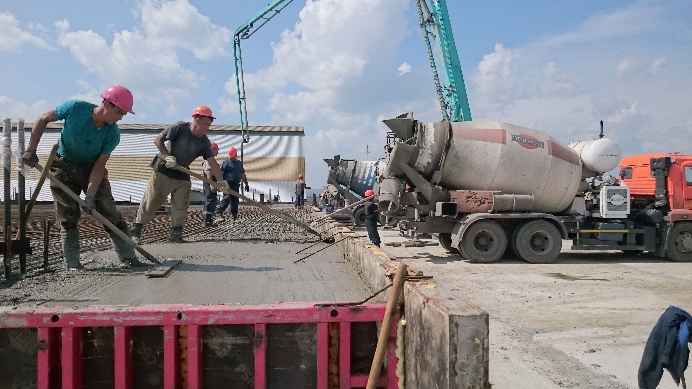
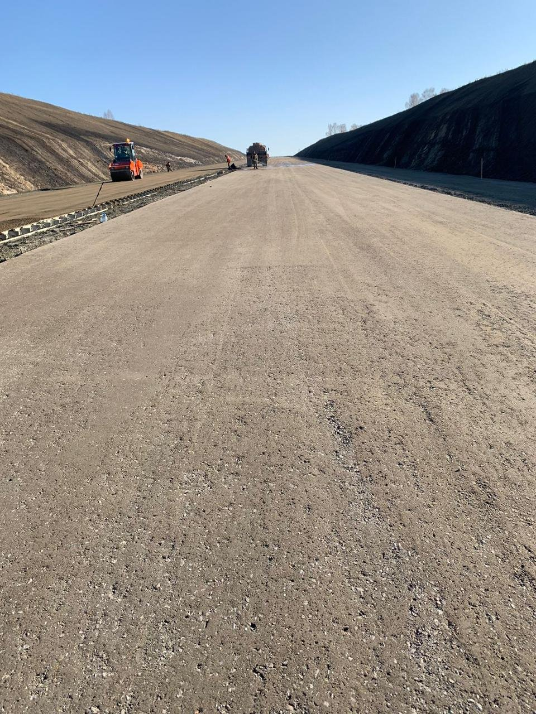
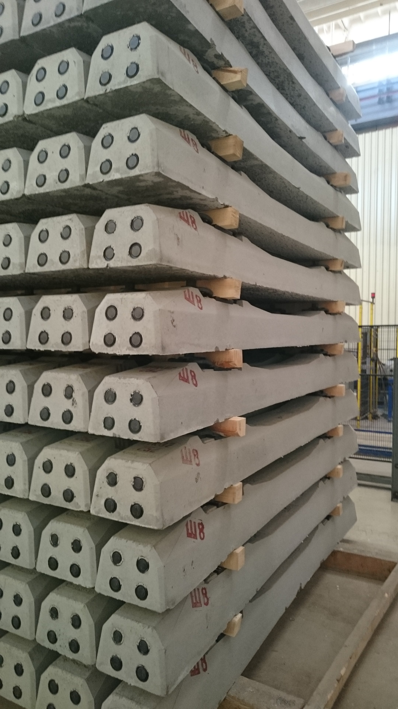
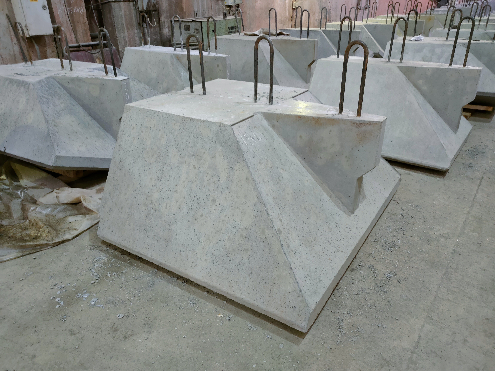

Добавки в бетон
ООО «Строительные системы Сибири» по направлению «Добавки в бетон» предлагает Вам поставку продукции, а также техническое сопровождение, внедрение на смежных производствах.
Комплекс современных добавок в бетон предназначен для решения рядовых и сложных инженерных задач, начиная с экономии цемента и получения ранней прочности, заканчивая высоким качеством поверхности бетонных элементов, снижением трещин, и увеличением срока службы строительных конструкций.
Основываясь на опыте партнеров и с участием наших технических специалистов, осуществляется разработка рекомендаций, внедрение на производстве и оптимизация технологических процессов при применении добавок с целью получения сокращения материальных и трудовых затрат в строительстве.
В процессе технического сопровождения, работая с производителями бетона, осуществляется корректирование составов бетонов и норм расхода с учетом поставленных задач.
Каталог продукции- 
- 
- 
-

- 